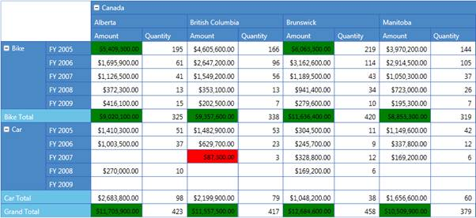

Conditional Formatting is the process of applying custom styles to any object based on certain conditions. Conditional Formatting for PivotGrid WPF allows you to format the Grid cells based on conditions. This can be achieved by defining PivotGridDataConditionalFormat for the Grid, which allows you to specify the criteria for filtering cells and styles to be applied for the filtered cells. After the specifications are defined, the specified styles are applied only to cells that satisfy the conditions specified. Conditional Formatting can be specified by using the PivotGridControl.ConditionalFormats property, which is an observable collection of type PivotGridDataConditionalFormat.
The criteria for filtering cells are specified by using the PivotGridDataConditionalFormat.Conditions property, which is a collection of PivotGridDataCondition objects. The style for each ConditionalFormat can be specified by using the PivotGridDataConditionalFormat.CellStyle property, which should be of type PivotGridCellStyle.
Adding Conditional Formatting
Conditional Formatting can be added both in code-behind and XAML, as shown in the following code snippets.
|
[XAML] <!--Specifying PivotRows.--> <syncfusion:PivotGridControl.PivotRows> <syncfusion:PivotItem FieldMappingName="Product" TotalHeader="Total"/> <syncfusion:PivotItem FieldMappingName="Date" TotalHeader="Total"/> </syncfusion:PivotGridControl.PivotRows> <!--Specifying PivotColumns.--> <syncfusion:PivotGridControl.PivotColumns> <syncfusion:PivotItem FieldMappingName="Country" TotalHeader="Total"/> <syncfusion:PivotItem FieldMappingName="State" TotalHeader="Total"/> </syncfusion:PivotGridControl.PivotColumns> <!--Specifying PivotCalculationValues.--> <syncfusion:PivotGridControl.PivotCalculations> <syncfusion:PivotComputationInfo FieldName="Amount" Format="C" SummaryType="DoubleTotalSum"/> <syncfusion:PivotComputationInfo FieldName="Quantity" Format="#,##0"/> </syncfusion:PivotGridControl.PivotCalculations>
<syncfusion:PivotGrid.ConditionalFormats> <!-- Adding Conditions. --> <syncfusion:PivotGridDataConditionalFormat Name="C1"> <!-- Specifying the Cell Style. --> <syncfusion:PivotGridDataConditionalFormat.CellStyle> <syncfusion:PivotGridCellStyle Background="Green" FontFamily="Calibri" FontSize="12"/> </syncfusion:PivotGridDataConditionalFormat.CellStyle> <!-- Specifying Conditions. --> <syncfusion:PivotGridDataConditionalFormat.Conditions> <syncfusion:PivotGridDataCondition ConditionType="GreaterThan" Value="5000000" SummaryElement="Amount" PredicateType="And"/> </syncfusion:PivotGridDataConditionalFormat.Conditions> </syncfusion:PivotGridDataConditionalFormat> <syncfusion:PivotGridDataConditionalFormat Name="C2"> <!-- Specifying the Cell Style --> <syncfusion:PivotGridDataConditionalFormat.CellStyle> <syncfusion:PivotGridCellStyle Background="Red" FontFamily="Calibri" FontSize="12"/> </syncfusion:PivotGridDataConditionalFormat.CellStyle> <!-- Specifying Conditions. --> <syncfusion:PivotGridDataConditionalFormat.Conditions> <syncfusion:PivotGridDataCondition ConditionType="LessThan" Value="100000 " SummaryElement="Amount" PredicateType="And"/> </syncfusion:PivotGridDataConditionalFormat.Conditions> </syncfusion:PivotGridDataConditionalFormat> </syncfusion:PivotGrid.ConditionalFormats>
|
|
[C#] // Specifying the PivotGridDataConditionalFormat. PivotGridDataConditionalFormat conditionalFormat1 = new PivotGridDataConditionalFormat(); // Adding Conditions to the PivotGridDataConditionalFormat. conditionalFormat1.Conditions.Add(new PivotGridDataCondition() { ConditionType= PivotGridDataConditionType.GreaterThan , SummaryElement="Amount", Value="5000000", PredicateType = PredicateType.And });
// Specifying the Cell Style. conditionalFormat1.CellStyle = new PivotGridCellStyle() { Background= Brushes.Green, FontFamily = new FontFamily("Calibri"), FontSize=12 };
// Specifying the PivotGridDataConditionalFormat. PivotGridDataConditionalFormat conditionalFormat2 = new PivotGridDataConditionalFormat(); // Adding Conditions to the PivotGridDataConditionalFormat. conditionalFormat2.Conditions.Add(new PivotGridDataCondition() { ConditionType= PivotGridDataConditionType.LessThan , SummaryElement="Amount", Value="100000", PredicateType = PredicateType.And });
// Specifying the Cell Style. conditionalFormat2.CellStyle = new PivotGridCellStyle() { Background= Brushes.Red, FontFamily = new FontFamily("Calibri"), FontSize=12 };
// Adding Conditions to the PivotGrid. this.PivotGrid1.ConditionalFormats.Add(conditionalFormat1); this.PivotGrid1.ConditionalFormats.Add(conditionalFormat2);
|
|
[VB] ' Specifying PivotGridDataConditionalFormat. Dim conditionalFormat1 As PivotGridDataConditionalFormat = New PivotGridDataConditionalFormat() ' Adding Conditions to the PivotGridDataConditionalFormat. conditionalFormat1.Conditions.Add(New PivotGridDataCondition() With {.ConditionType= PivotGridDataConditionType.GreaterThan, .SummaryElement="Amount", .Value="5000000", .PredicateType = PredicateType.And})
' Specifying the Cell Style to the ConditionalFormat. conditionalFormat1.CellStyle = New PivotGridCellStyle() Dim TempFontFamily As FontFamily = New FontFamily("Calibri"), FontSize=12 Brushes.Green, FontFamily = New FontFamily("Calibri"), FontSize Background= Brushes.Green, FontFamily
' Specifying the PivotGridDataConditionalFormat. Dim conditionalFormat2 As PivotGridDataConditionalFormat = New PivotGridDataConditionalFormat() ' Adding Conditions to the PivotGridDataConditionalFormat. conditionalFormat2.Conditions.Add(New PivotGridDataCondition() With {.ConditionType= PivotGridDataConditionType.GreaterThan, .SummaryElement="Amount", .Value="100000", .PredicateType = PredicateType.And})
' Specifying the Cell Style to the ConditionalFormat. conditionalFormat2.CellStyle = New PivotGridCellStyle() Dim TempFontFamily As FontFamily = New FontFamily("Calibri"), FontSize=12 Brushes.Red, FontFamily = New FontFamily("Calibri"), FontSize Background= Brushes.Red, FontFamily
' Adding Conditions to the PivotGrid. Me.PivotGrid1.ConditionalFormats.Add(conditionalFormat1) Me.PivotGrid1.ConditionalFormats.Add(conditionalFormat2) |

Figure 11: Conditionally Formatted PivotGrid
Sample Link
..\..\ Syncfusion\BI\Silverlight\Syncfusion.PivotGrid.Silverlight.Samples\Syncfusion.PivotGrid.Silverlight.Samples\Samples\CFDemo